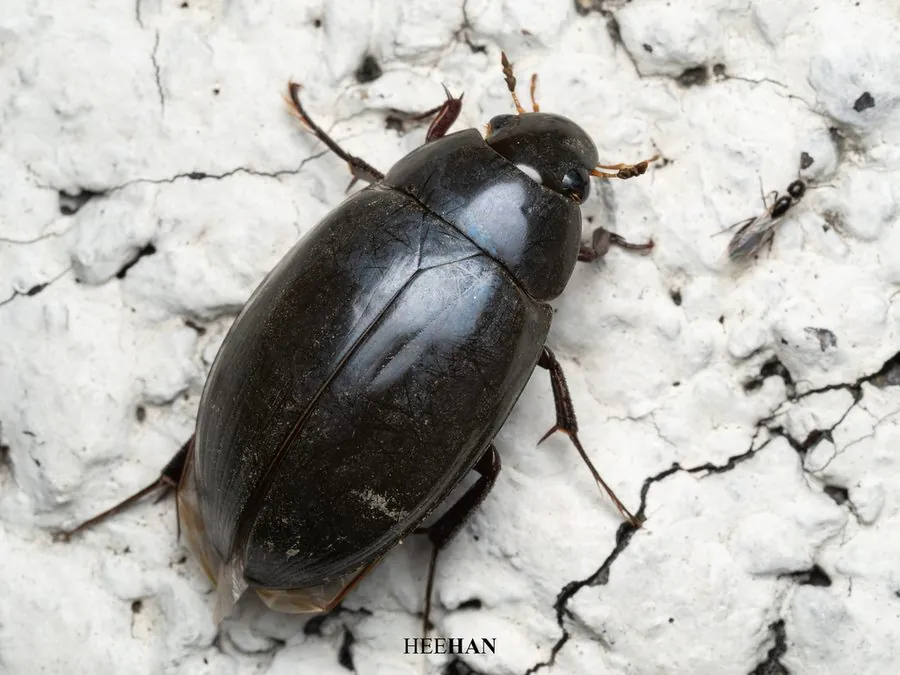

昆虫 · 动物界
水龟虫 Hydrophilus acuminatus

体黑亮如龟、腹部有龙骨的水生甲虫，捕食水生小动物，幼虫凶猛，栖于池塘与稻田，夜间有趋光性。
- 分类
- 门节肢动物门纲昆虫纲目鞘翅目科水龟虫科属水龟虫属
- 栖息环境
- 池塘、稻田、水沟等静水及水草茂密的浅水区
- 地理分布
- 中国南北各地及日本、朝鲜半岛
- 保护级别
- 常见种，无保护级别；水质污染是主要威胁
物种志
水龟虫的成虫体长三至四厘米，体黑褐色而带光泽，椭圆形，背面隆起如一只小龟。腹面中央有一条突出的龙骨，这是它与龙虱最明显的区别。触角短，末端膨大成棒状，用于探测水中的气味；后足扁平成桨状，密生游泳毛。幼虫体形细长，头部有一对镰刀状大颚，捕食时十分凶猛。
它分布于中国南北各地以及日本、朝鲜半岛，栖息在池塘、稻田和水沟等静水，成虫白天在水草间爬行，夜间可飞向灯光。它捕食水生小虫、螺类和蝌蚪，也吃腐肉，幼虫在水中猎食，老熟后爬到岸边土中化蛹。人被它的大颚夹住会感到疼痛。它对水质污染敏感，是淡水湿地中较易观察的大型水生甲虫。
形态与习性
- 体长三至四厘米，椭圆形如龟
- 腹面中央有突出龙骨，区别于龙虱
- 触角短，末端膨大成棒状
- 食性捕食水生小虫、螺类、蝌蚪，亦食腐肉
- 幼虫具镰刀状大颚，水中凶猛猎食
- 习性夜间可飞向灯光
趣味知识
- 把它翻过来看肚子，中央那条隆起的龙骨就是水龟虫的身份证。
- 它虽然叫龟，却是水里的猎手，螺和小鱼都逃不过它的大颚。
- 夜里的路灯下偶尔能捡到它，那是它从池塘飞出来的。